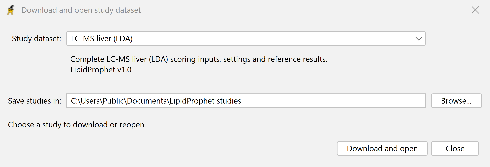

1. Open LipidProphet
Choose the download for your operating system and launch the desktop application. On the Input / Compute tab, select Download study dataset….
Each of the seven study packages includes processed search results, a sample list, saved settings, and a reference table. You can start before preparing any files of your own.
2. Download and open the liver study
Pick the example
Select LC-MS liver (LDA) in the study list. The download is about 40 MB and includes the positive- and negative-ion search results.
Choose a folder
Under Save studies in, select a writable folder and click Download and open. LipidProphet loads the workspace and fills in the input paths. Selecting the same study and folder later reopens the local copy, including offline.


3. Check the inputs and select Compute
For this study, Input / Compute lists a sample list and two LDA .tab files, one for each ion polarity. The workspace selects the LC-MS profile, sets the precursor and fragment tolerances to 0.01 and 0.2 Da, respectively, and sets the retention-time tolerance to 0.15 minutes.

Click Compute. Follow progress in Console. On completion, the console reports All done! and the application opens QC: LP score plot.
4. Compare your table with the reference
Open lcms-liver/results/LipidProphet_results.tab as tab-separated text. The packaged reference is lcms-liver/reference/results.tab. With the supplied workspace and the same build, the files should match.
Use the QC plot to explore a cutoff. Then filter LipidProphet score in the exported table to see which identifications meet it.
Ready to score your own samples? Prepare the sample list and search results.